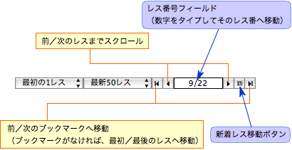
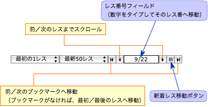

特定のレスに移動する
特定のレスに移動する
スレッド表示領域の右下にあるスレッドナビゲーション（下図）を使用して、素早くレスを移動したり、表示範囲を切り替えることができます。

- レス番号フィールドをクリックして、レス番号を入力します。次に、return キーを押します。すると、そのレス番号にすばやく移動できます。
- ブックマークしておいたレスに素早く移動するときは、レス移動ボタンをクリックします。
- 新着レス移動ボタンをクリックすると、すぐに新着レスにジャンプできます。
スレッド表示領域の右下にあるスレッドナビゲーション（下図）を使用して、素早くレスを移動したり、表示範囲を切り替えることができます。
